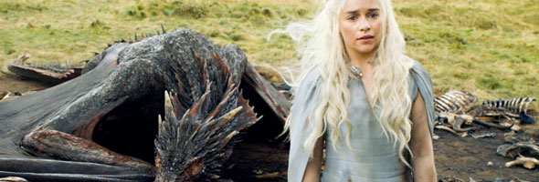

Bran Stark sera de retour dans la saison 6 de Game Of Thrones
L’acteur Isaac Hempstead Wright vient de confirmer qu'il sera bel et bien de retour dans la saison 6 de Game Of Thrones
Read more →Les effets spéciaux de la saison 5 se dévoilent
L'épisode 8 de la saison 5 a marqué les esprits tant sa mise en scène fut l'une des plus impressionnantes de la série Game Of Thrones
Read more →Audience Game of Thrones, saison 5-10 Mother’s Mercy
La saison 5 de Game of Thrones s'est terminée en beauté avec un nouveau record d'audience
Read more →Game of Thrones, saison 5-10 The Mother’s Mercy, vos réactions !
Et voilà, c'est la fin, le tout dernier épisode de la saison 5 de Game Of Thrones a été diffusé hier soir sur la chaîne HBO.
Read more →Mother’s Mercy: trailer de épisode 10 de la saison 5
Et voilà, nous y sommes, à quelques jours de la diffusion du dernier épisode de la saison 5 de Game Of Thrones, celui-ci se dévoile au travers d'une bande-annonce qui donne le ton.
Read more →Game Of Thrones
Le site pour tous les fans en france de la série Game Of thrones.
Le Blu-Ray de la saison 5 de Game of Thrones sera disponible dès le 15 février 2016